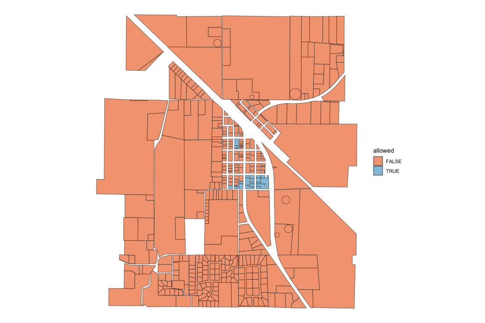
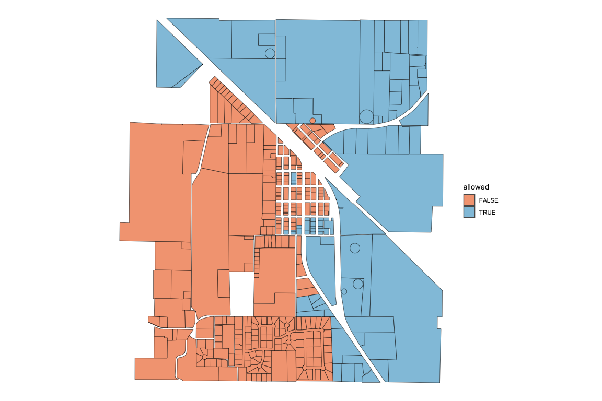
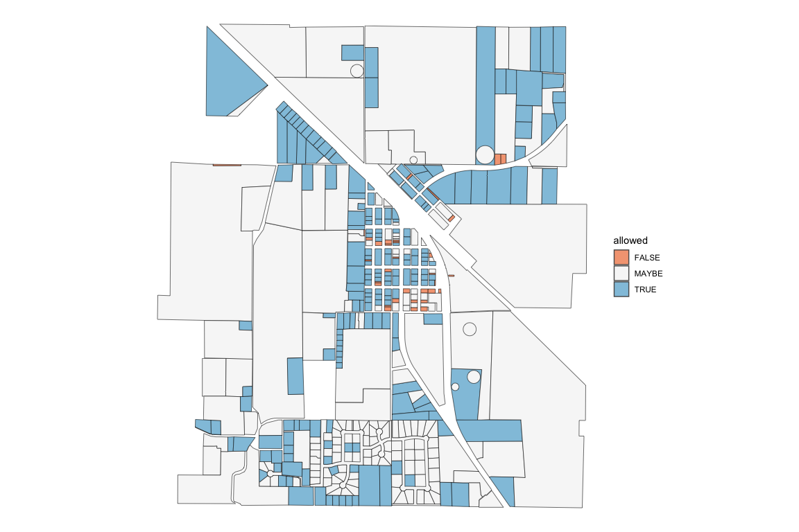

Analyze the housing capacity of cities using Open Zoning Feed Specification (OZFS) data.
The main function of zoneR is zr_run_zoning_checks() which reads in an OZFS .bldg, .parcel, and .zoning file. It calculates the zoning requirements for each parcel, checks them against the building characteristics, and returns a data frame with a row for each parcel and an “allowed” column containing one of three possible values.
TRUE: The building is allowed on the parcelFALSE: The building is not allowed on the parcelMAYBE: The building might be allowed on the parcel depending on conditions that are not yet possible to express in OZFS.
Installation
You can install the development version of zoneR from GitHub with:
# install.packages("devtools")
devtools::install_github("vibe-lab-gsd/zoneR")Example
This is a basic example of finding which parcels in Paradise, TX allow a duplex with a gross floor area of 3200 square feet and a height of 45 feet. Small OZFS files accessible through the package will be used in the example.
We get the file paths for the example OZFS files using zr_example_files().
library(zoneR)
bldg_path <- zr_example_files("2_fam.bldg")
parcel_path <- zr_example_files("Paradise.parcel")
zoning_path <- zr_example_files("Paradise.zoning")We can then put each of the files into the zr_run_zoning_checks() function and assign the result to a variable called zoning_checks.
zoning_checks <- zr_run_zoning_checks(bldg_file = bldg_path,
parcel_files = parcel_path,
zoning_files = zoning_path)
#> ___data_prep___(0.4 sec)
#>
#> ___get_zoning_req___(0.9 sec)
#>
#> ___initial_checks___(0.5 sec)
#> 21 parcels are TRUE or MAYBE
#>
#> ___bldg_fit___(28.6 sec)
#> 9 parcels are TRUE or MAYBE
#>
#> _____summary_____
#> total runtime: 30.3 sec (0.51 min)
#> 0 / 421 parcels allow the building
#> 11 / 421 parcels might allow the buildingThe result of the function is a simple features data frame with the following columns: “parcel_id”, “allowed”, “reason”, “geometry.” Note that the geometry is the centroid of the parcel.
head(zoning_checks)
#> Simple feature collection with 6 features and 3 fields
#> Geometry type: POINT
#> Dimension: XY
#> Bounding box: xmin: -97.69917 ymin: 33.1448 xmax: -97.69153 ymax: 33.15607
#> Geodetic CRS: WGS 84
#> parcel_id allowed reason
#> 1 Wise_County_combined_parcel_1 FALSE res_type, height
#> 2 Wise_County_combined_parcel_10300 FALSE res_type, height
#> 3 Wise_County_combined_parcel_10450 FALSE res_type, height
#> 4 Wise_County_combined_parcel_10451 FALSE res_type, height, unit_density
#> 5 Wise_County_combined_parcel_10452 FALSE res_type, height, unit_density
#> 6 Wise_County_combined_parcel_10464 FALSE res_type, height
#> geometry
#> 1 POINT (-97.69524 33.14755)
#> 2 POINT (-97.69382 33.15607)
#> 3 POINT (-97.69415 33.1448)
#> 4 POINT (-97.69156 33.14562)
#> 5 POINT (-97.69153 33.14699)
#> 6 POINT (-97.69917 33.15142)The graph below is a visualization of the results.
It appears this duplex would not be allowed in most the Paradise parcels. To look further into the reasons, we can specify the checks we want to be run and look at those results. Since land use regulations are often a distinguishing factor in allowing a building on a parcel, only the res_type check will be run in this next example. We will also put print_checkpoints = FALSE because we don’t really need it to tell us when it is done with the different parts of the function.
zoning_checks <- zr_run_zoning_checks(bldg_file = bldg_path,
parcel_files = parcel_path,
zoning_files = zoning_path,
checks = "res_type",
print_checkpoints = FALSE)
#> zoning checks finished
#> total runtime: 1.3 sec (0.02 min)Now we can see that only a few of the parcels are in a district that allows buildings with two units. It makes sense why there were only a few parcels in the previous check that might have allowed the building. 
Here are a few other constraint checks to visualize.
Height Check
zoning_checks <- zr_run_zoning_checks(bldg_file = bldg_path,
parcel_files = parcel_path,
zoning_files = zoning_path,
checks = "height",
print_checkpoints = FALSE)
#> zoning checks finished
#> total runtime: 1.4 sec (0.02 min)
Building Fit Check
zoning_checks <- zr_run_zoning_checks(bldg_file = bldg_path,
parcel_files = parcel_path,
zoning_files = zoning_path,
checks = "bldg_fit",
print_checkpoints = FALSE)
#> zoning checks finished
#> total runtime: 96.8 sec (1.61 min)
Many of the “MAYBE” values attached to the bldg_fit constraint represent parcels that didn’t have labeled sides. Without labeled sides, a proper buildable area could not be calculated, and the building fit check was skipped.
Detailed Check
In addition to the usual data frame that is returned, setting detailed_check = TRUE returns the data frame with additional columns for every check that took place (Note this requires more processing time as the code does not skip consecutive checks if a previous check yields FALSE).
zoning_checks <- zr_run_zoning_checks(bldg_file = bldg_path,
parcel_files = parcel_path,
zoning_files = zoning_path,
detailed_check = TRUE)
#> ___data_prep___(0.2 sec)
#>
#> ___get_zoning_req___(1 sec)
#>
#> ___initial_checks___(0.5 sec)
#> 21 parcels are TRUE or MAYBE
#>
#> ___bldg_fit___(1.57 min)
#> 221 parcels are TRUE or MAYBE
#>
#> _____summary_____
#> total runtime: 96 sec (1.6 min)
#> 0 / 421 parcels allow the building
#> 11 / 421 parcels might allow the buildingWith these added columns, we can look more closely at why the building does not fit in most of the parcels.
column_true_sums <- colSums(sf::st_drop_geometry(zoning_checks) == "TRUE", na.rm = TRUE)
ordered_sums <- column_true_sums[order(column_true_sums)]| constraint_check | parcels_true |
|---|---|
| res_type | 24 |
| height | 97 |
| bldg_fit | 208 |
| parcel_side_lbl | 254 |
| unit_density | 297 |
| stories | 397 |
| lot_cov_bldg | 418 |
| district_check | 421 |
| unit_size | 421 |
It appears the res_type constraint is the most restrictive and the unit_size constraint is the least restrictive for the given building.
Inside the zr_run_zoning_checks()
Most of the functions in zoneR were created for zr_run_zoning_checks(), but they can be use by themselves if desired. Below are some of the main variables that the different zoneR functions take in.
bldg_data: The
.bldgfile read in as a list usingrjson::fromJSON()parcel_dims: Created with the
zr_get_parcel_dims()function. A simple features data frame with all the centroid and dimensional data from the.parcelfile. It contains one row per parcel.parcel_data: One row of the parcel_dims data frame representing a unique parcel
parcel_geo: Created with the
zr_get_parcel_geo()function. A simple features data frame containing the geometry of each parcel side without the centroid or dimensional data.zoning_data: The data in the
.zoningfile read in as a simple features data frame usingsf::st_read().district_data: One row of the zoning_data data frame representing a unique district.